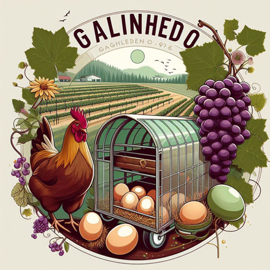
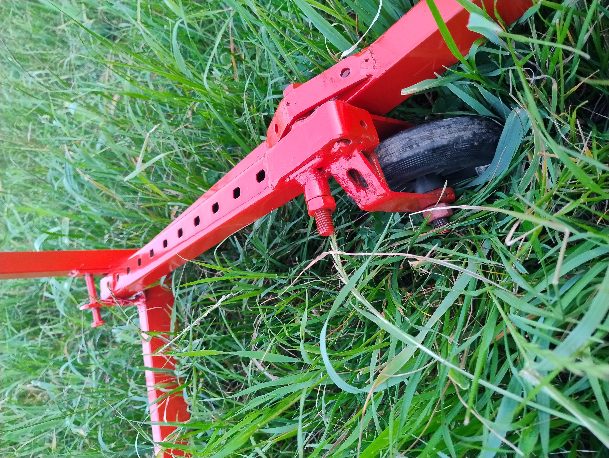
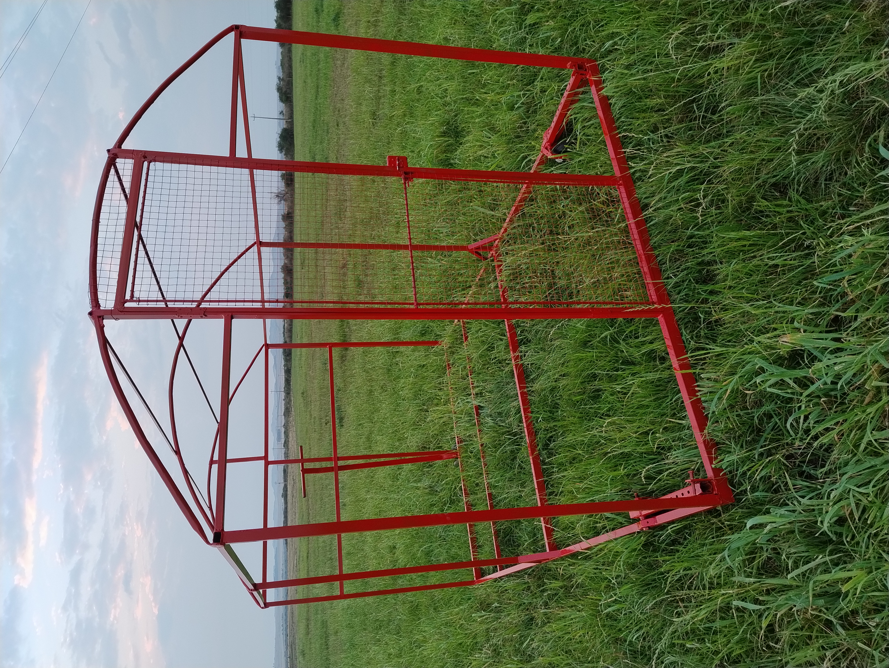
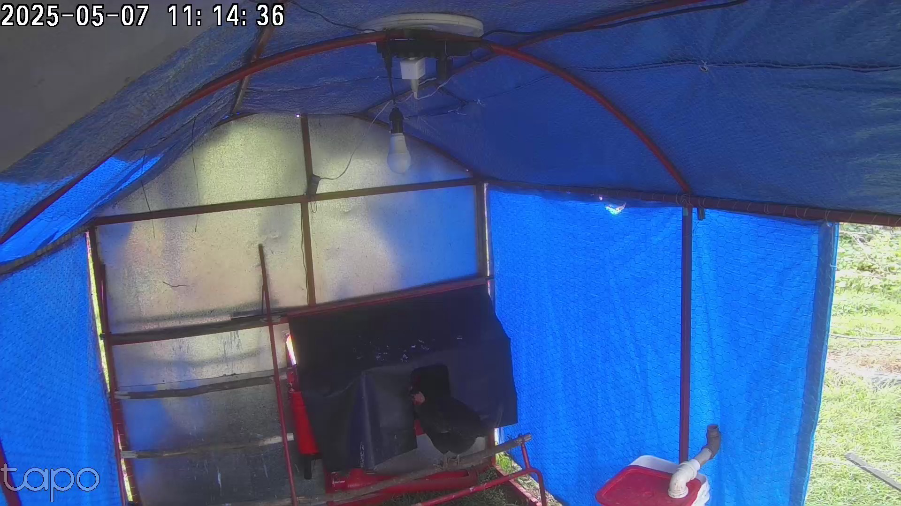
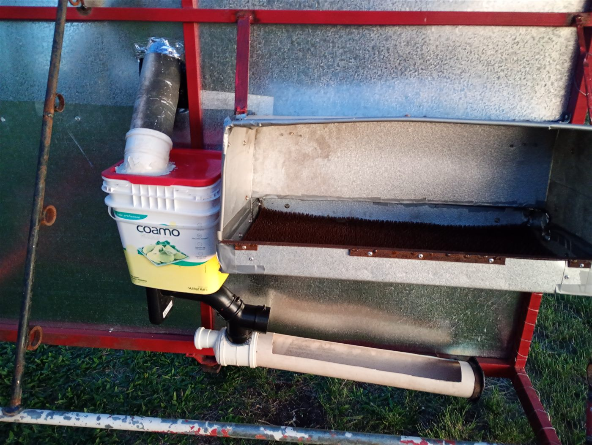
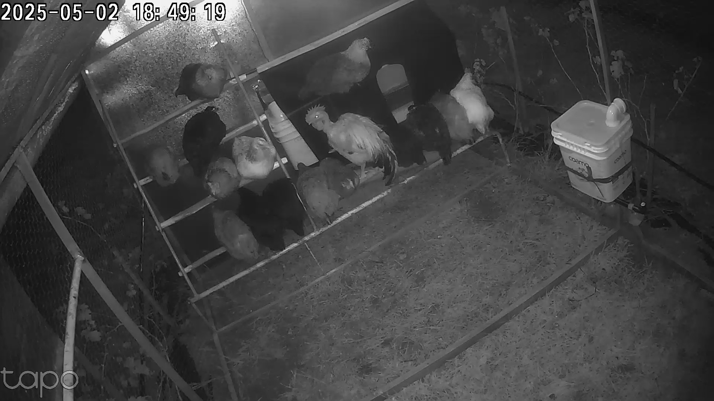
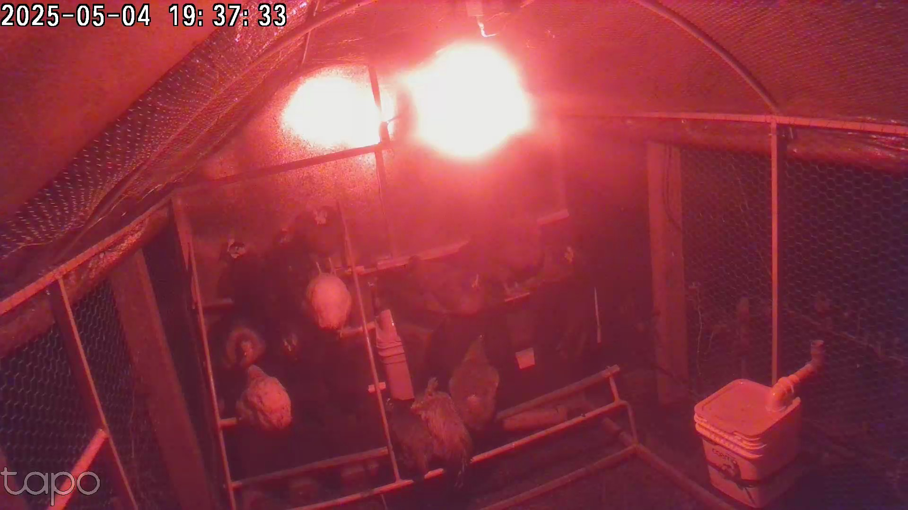
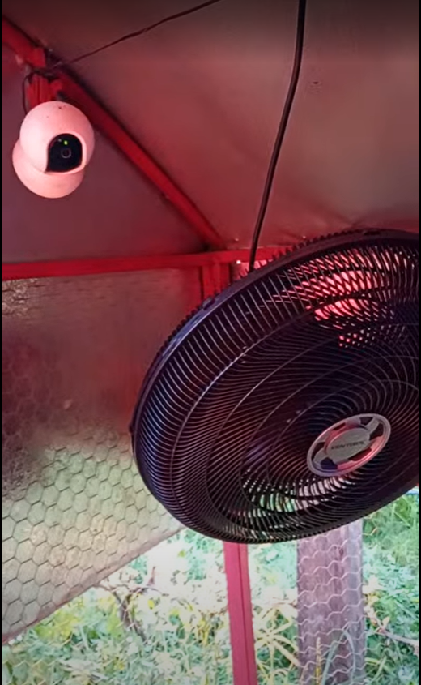
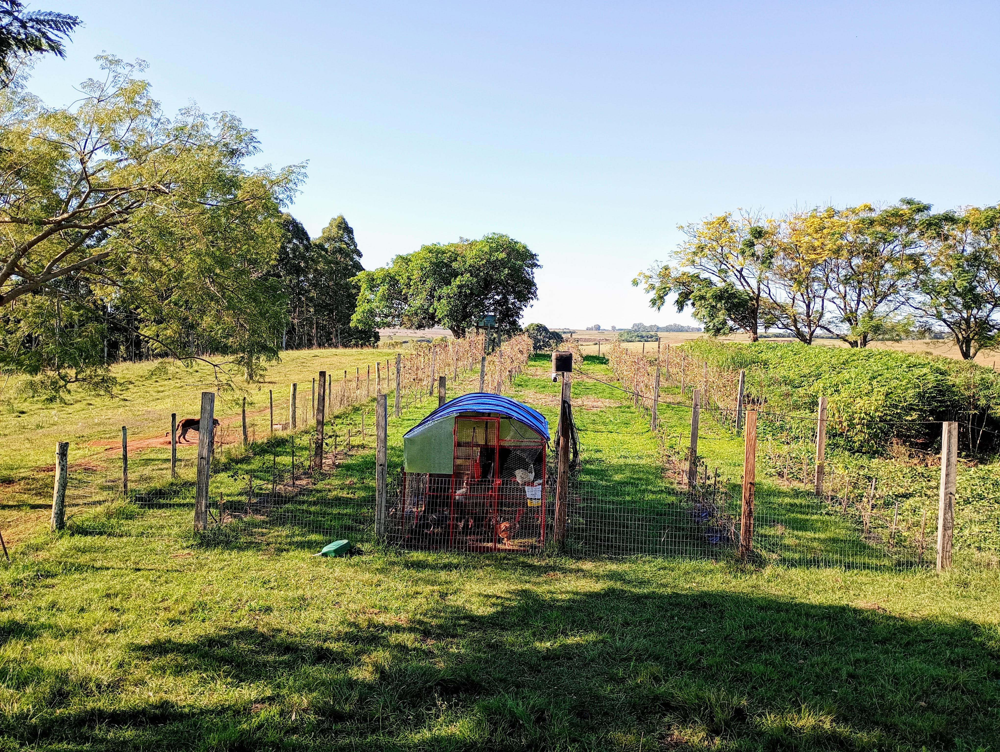

Inspirado no modelo americano da Pasturebird, que move suas aves todos os dias para renovar a pastagem, este é um galinheiro doméstico leve o bastante para se deslocar sozinho a cada poucos dias, entre as fileiras de um vinhedo. A ideia central: aves soltas a pasto, adubando e roçando as entrelinhas a cada giro, com menos trabalho manual graças à automação de luz, comedouro e ventilação. Isolar o plantel do contato com pássaros silvestres, diante do risco de gripe aviária, é uma vantagem a mais, não o motivo principal. As medidas aqui são as de um caso real; ajuste ao espaço e ao número de aves da sua propriedade.
Experiência e projeto: Prof. Róberson Macedo de Oliveira

rodas
estrutura
ninho
comedouro
bebedouro
lâmpada
câmera
conjunto, no vinhedoO que define o tamanho muda conforme o uso. Dentro de um vinhedo ou pomar, é a entrelinha que manda: a estrutura precisa caber no corredor. Fora dessa restrição, inverta a lógica e dimensione pelo número de aves.
Os dois protocolos automatizam lâmpada, tomada e câmera. A diferença está no que cada um exige por trás.
Cada dispositivo conecta direto na rede de internet da propriedade, sem equipamento extra. Basta ter Wi-Fi ou um roteador ligado a uma internet, inclusive por Starlink em local sem fibra ou 4G. Mais simples de instalar e de manter.
Exige um hub central para conversar com o app, mas forma uma rede própria entre os dispositivos, o que ajuda quando são muitos sensores espalhados pela propriedade, como no monitoramento de solo e irrigação testado em paralelo neste projeto.
| Item | Qtd. | Valor |
|---|---|---|
| Estrutura | ||
| Lona (6x4m) | 1 | R$ 61,98 |
| Lona de polietileno azul 3x2m | 2 | R$ 50,94 |
| Roda para carrinho de carga | 4 | R$ 120,80 |
| Rolamento | 8 | R$ 40,00 |
| Tubo industrial 30x50 | 2 | R$ 220,42 |
| Tubo industrial 30x40 | 1 | R$ 95,44 |
| Tubo industrial 20x30 | 4 | R$ 273,48 |
| Ferro cantoneira 5/8 | 2 | R$ 62,06 |
| Folha de lata | 4 | R$ 240,00 |
| Eletrodo | 4 | R$ 60,00 |
| Ferro sucata | 18,3kg | R$ 183,00 |
| Tinta | 3 | R$ 90,00 |
| Tela | 1,2 | R$ 33,60 |
| Arame | 1 | R$ 35,00 |
| Parafuso | 1 | R$ 58,00 |
| Disco de corte | 5 | R$ 25,00 |
| Subtotal estrutura | R$ 1.649,72 | |
| Ninho | ||
| Tapete plástico para ninho, tipo astroturf, 120x465mm | 1 | R$ 108,00 |
| Comedouro | ||
| Alimentador comedouro tratador automático com timer (Mimamute) | 1 | R$ 234,59 |
| Tomada inteligente Wi-Fi TP-Link Tapo P110 | 1 | R$ 68,34 |
| Bombona transparente | 1 | R$ 37,89 |
| Conexões | 1 | R$ 15,00 |
| Subtotal comedouro | R$ 355,82 | |
| Bebedouro | ||
| Bombona transparente | 1 | R$ 37,89 |
| Bico bebedouro niple, média vazão | 2 | R$ 12,38 |
| Taça bebedouro, respinga gotas | 2 | R$ 7,80 |
| Conexões | 2 | R$ 20,00 |
| Subtotal bebedouro | R$ 78,07 | |
| Iluminação | ||
| Bocal pendente sem chave | 1 | R$ 1,90 |
| Plugue macho 10A bipolar com emenda | 1 | R$ 4,77 |
| Lâmpada Wi-Fi inteligente TP-Link Tapo L530E, cor ajustável | 1 | R$ 43,26 |
| Subtotal iluminação | R$ 49,93 | |
| Ventilação | ||
| Tomada inteligente Wi-Fi TP-Link Tapo P110 | 1 | R$ 68,34 |
| Ventilador de parede oscilante, 50cm | 1 | R$ 164,22 |
| Subtotal ventilação | R$ 232,56 | |
| Câmeras e rede | ||
| Câmera Wi-Fi 360°, TP-Link Tapo C200 | 1 | R$ 199,00 |
| Câmera Wi-Fi externa, TP-Link Tapo C500 | 1 | R$ 352,59 |
| Filtro de linha, 6 tomadas | 1 | R$ 41,88 |
| Protetor contra raio, 2 tomadas | 1 | R$ 24,90 |
| Subtotal câmeras e rede | R$ 618,37 | |
| Total, galinheiro completo | R$ 3.092,47 | |